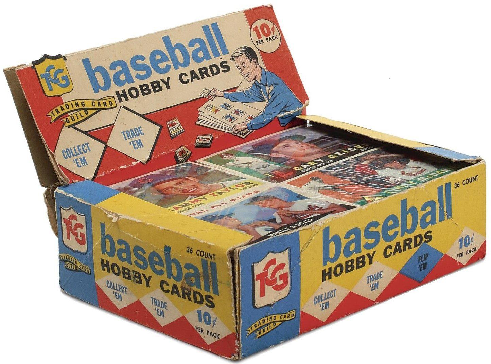

Product Consumption
From its early years, collectable cards was a growing hobby for kids as they wanted to gather as many as possible. Then they would go showing them off to their friends and often trade them at school with other people in search of a card one would have. Sometimes parents would not have understood the motivation of collecting cards and often threw them away, thinking that their child are wasting money on collecting useless cardboard. When trading card games were introduced it exposed many children growing up to collect and then use the cards obtained to play games. Whereas baseball or sports cards were only meant for collection, the card games motivated those to dive into the hobby, which by the effect, increased revenue to the card trading industry. For example, Pokémon, along with its popular video games, had trading cards reflecting the videogames. Children would be obtaining cards to play and trade with their friends, showing off cards that are either strong in play, or shows its dynamic artstyle. This boosted sales of the product that the Pokémon Company were making. So it would be no surprise that many companies would join the trend of making collectables be useful in recreational play.
Printing Cards
With the trading card game gaining an increase of attention, the games itself would be the core value of using the cards. Companies would print cards in bundles of sets, and within those sets contain a list of cards. What was introduced likely as an inspiration to the baseball trading cards was rarities. It was incorporated into Magic: The Gathering starting with common cards and uncommon cards. Later on they introduced higher versions of rarities and other card games followed.
The printing of cards with rarities increased the chase of collectivity among the consumers. Along with rarities, the chances of pulling the card desired is all up to chance when opening booster packs. The companies manufactoring the cards have control of how often cards in their respective rarities, giving the scarcity and generating value when either selling the card or trading it.
Rarities
The General rarities among card games are as followed:
- Common
- Uncommon
- Rare
- Super Rare
- Ultra Rare
- Secret Rare
Alternate rarities
This category can be interpreted into many names, such as "Alternate Art,""Full Art,"“Lost Art,""Mythic Rare," and much, much more.